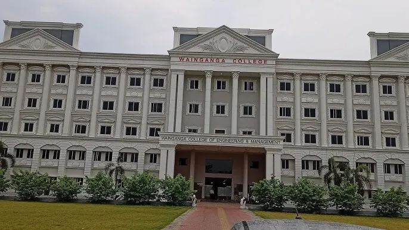

Wainganga College of Engineering and Management (WCEM) is a private engineering college located in Nagpur, Maharashtra, India. Established in 2002, it is part of theangar Education Society and is affiliated with RTMNU University. WCEM offers undergraduate and postgraduate programs in various fields of engineering and management, including civil engineering, computer engineering, electronics and telecommunication engineering, Artificial Intelligence, and business administration. And other courses.The college is spread across a large campus with modern infrastructure, including lecture halls, laboratories, a library, and sports facilities. WCEM aims to provide quality education and technical training to students, preparing them for successful careers in their respective fields.
Copyright © 2026 Wainganga College Of Engineering And Management. All rights reserved.